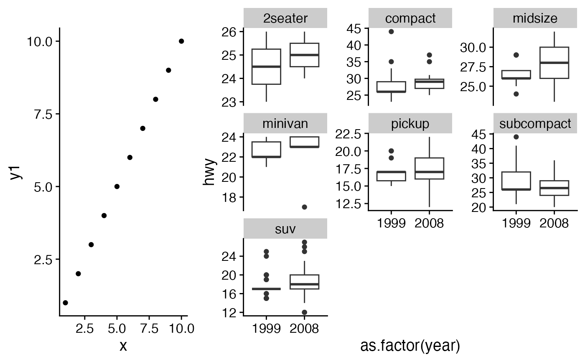

Arrange multiple plots into a grid
plot_grid.RdArrange multiple plots into a grid.
plot_grid(..., plotlist = NULL, align = c("none", "h", "v", "hv"), axis = c("none", "l", "r", "t", "b", "lr", "tb", "tblr"), nrow = NULL, ncol = NULL, rel_widths = 1, rel_heights = 1, labels = NULL, label_size = 14, label_fontfamily = NULL, label_fontface = "bold", label_colour = NULL, label_x = 0, label_y = 1, hjust = -0.5, vjust = 1.5, scale = 1, greedy = TRUE, cols = NULL, rows = NULL)
Arguments
| ... | List of plots to be arranged into the grid. The plots can be any objects that
the function |
|---|---|
| plotlist | (optional) List of plots to display. Alternatively, the plots can be provided individually as the first n arguments of the function plot_grid (see examples). |
| align | (optional) Specifies whether graphs in the grid should be horizontally ("h") or vertically ("v") aligned. Options are "none" (default), "hv" (align in both directions), "h", and "v". |
| axis | (optional) Specifies whether graphs should be aligned by the left ("l"), right ("r"), top ("t"), or bottom ("b")
margins. Options are "none" (default), or a string of any combination of l, r, t, and b in any order (e.g. "tblr" or "rlbt" for aligning all margins).
Must be specified if any of the graphs are complex (e.g. faceted) and alignment is specified and desired. See |
| nrow | (optional) Number of rows in the plot grid. |
| ncol | (optional) Number of columns in the plot grid. |
| rel_widths | (optional) Numerical vector of relative columns widths. For example, in a two-column
grid, |
| rel_heights | (optional) Numerical vector of relative rows heights. Works just as
|
| labels | (optional) List of labels to be added to the plots. You can also set |
| label_size | (optional) Numerical value indicating the label size. Default is 14. |
| label_fontfamily | (optional) Font family of the plot labels. If not provided, is taken from the current theme. |
| label_fontface | (optional) Font face of the plot labels. Default is "bold". |
| label_colour | (optional) Color of the plot labels. If not provided, is taken from the current theme. |
| label_x | (optional) Single value or vector of x positions for plot labels, relative to each subplot. Defaults to 0 for all labels. (Each label is placed all the way to the left of each plot.) |
| label_y | (optional) Single value or vector of y positions for plot labels, relative to each subplot. Defaults to 1 for all labels. (Each label is placed all the way to the top of each plot.) |
| hjust | Adjusts the horizontal position of each label. More negative values move the label further to the right on the plot canvas. Can be a single value (applied to all labels) or a vector of values (one for each label). Default is -0.5. |
| vjust | Adjusts the vertical position of each label. More positive values move the label further down on the plot canvas. Can be a single value (applied to all labels) or a vector of values (one for each label). Default is 1.5. |
| scale | Individual number or vector of numbers greater than 0. Enables you to scale the size of all or
select plots. Usually it's preferable to set margins instead of using |
| greedy | (optional) How should margins be adjusted during alignment. See |
| cols | Deprecated. Use |
| rows | Deprecated. Use |
Examples
library(ggplot2) df <- data.frame( x = 1:10, y1 = 1:10, y2 = (1:10)^2, y3 = (1:10)^3, y4 = (1:10)^4 ) p1 <- ggplot(df, aes(x, y1)) + geom_point() p2 <- ggplot(df, aes(x, y2)) + geom_point() p3 <- ggplot(df, aes(x, y3)) + geom_point() p4 <- ggplot(df, aes(x, y4)) + geom_point() p5 <- ggplot(mpg, aes(as.factor(year), hwy)) + geom_boxplot() + facet_wrap(~class, scales = "free_y") # simple grid plot_grid(p1, p2, p3, p4)# simple grid with labels and aligned plots plot_grid( p1, p2, p3, p4, labels = c('A', 'B', 'C', 'D'), align="hv" )# manually setting the number of rows, auto-generate upper-case labels plot_grid(p1, p2, p3, nrow = 3, labels = "AUTO", label_size = 12, align = "v" )# making rows and columns of different widths/heights plot_grid( p1, p2, p3, p4, align = 'hv', rel_heights = c(2,1), rel_widths = c(1,2) )# aligning complex plots in a grid plot_grid( p1, p5, align = "h", axis = "b", nrow = 1, rel_widths = c(1, 2) )# more examples#' # missing plots in some grid locations, auto-generate lower-case labels plot_grid( p1, NULL, NULL, p2, p3, NULL, ncol = 2, labels = "auto", label_size = 12, align = "v" )# can align top of plotting area as well as bottom plot_grid( p1, p5, align = "h", axis = "tb", nrow = 1, rel_widths = c(1, 2) )# other types of plots not generated with ggplot p6 <- ~{ par( mar = c(3, 3, 1, 1), mgp = c(2, 1, 0) ) plot(sqrt) } p7 <- function() { par( mar = c(2, 2, 1, 1), mgp = c(2, 1, 0) ) image(volcano) } p8 <- grid::circleGrob() plot_grid(p1, p6, p7, p8, labels = "AUTO", scale = c(1, .9, .9, .7))